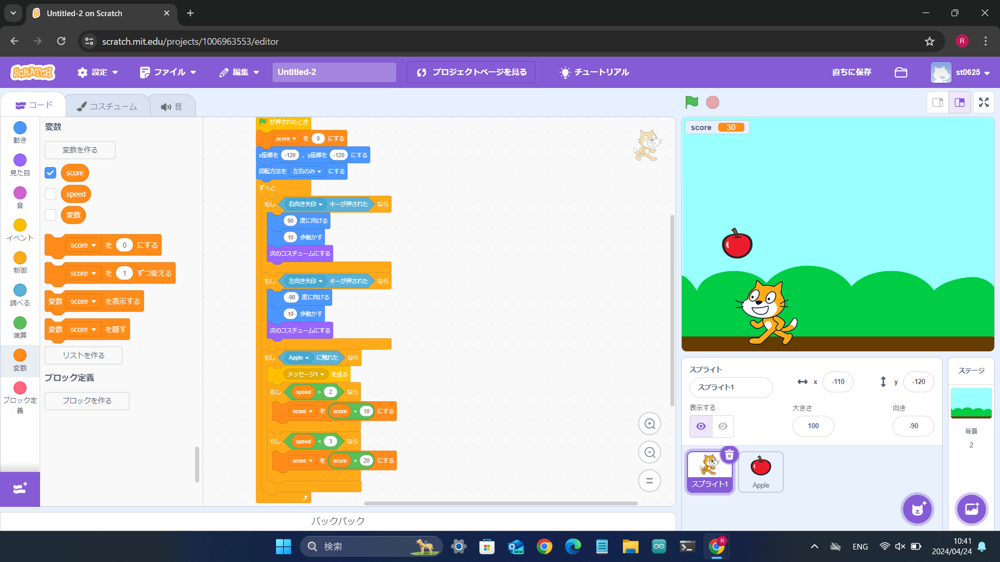
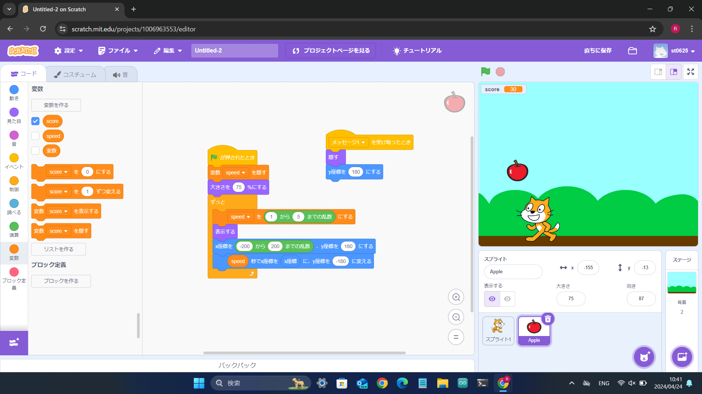

1-2 ゲーム


1.内容
猫を移動させて、落ちてくるリンゴをつかむプログラムの実装。矢印キーが押されたときに猫を移動させるようにした。リンゴを追加してリンゴが落ちるようにした。
リンゴを落とす位置をランダムなX座標にして、速さを変数speedを宣言して落ちて上に戻るごとに１～５の乱数に設定するようにした。猫に触れたらスプライトを隠すようにした。上に戻ったらスプライトを表示するようにした。変数scoreを宣言してspeedが４以上ならscore+20して、speedが３以下ならscore+10するようにした。最後に背景を追加して完成。
2.感想
かんそうかんそう